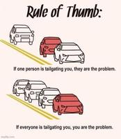

0

Apple now requires Education Store shoppers in the U.S. and several other countries to verify their student, educator, parent, or homeschool-teacher status through UNiDAYS, ending the previous honor-system approach. 9to5Mac reports: Starting today, Apple requires shoppers in the United States to complete verification when making a purchase via the Education Store. This change also applies to Australia, Hong Kong, Turkey, Canada, and Chile. In many other markets around the world, such as the UK, Apple already required verification. As a refresher, people eligible for Apple's Education Store include current and newly accepted college students and their parents, as well as faculty, staff, and homeschool teachers across all grade levels.
Apple is teaming up with UNiDAYS to handle the verification process. Students and educators will be asked to create a UNiDAYS ID and then verify their academic status by logging in to their school's academic portal. Alternatively, users can upload a photo of their student or faculty IDs. Homeschool teachers, meanwhile, will need to provide an identity document such as a driver's license, state ID card, or passport. They'll also need to provide one homeschool document, such as a Letter of Intent (LOI) or Letter of Acknowledgment. Most customers will be verified instantly, and those requiring manual verification should hear back within 24 hours. The same verification process applies both in-store and online for Apple Education Store shoppers. Meanwhile, Apple has added Apple Watch to the Education Store for the first time, offering discounts on the Series 11, SE 3, and Ultra 3.
Read more of this story at Slashdot.
The free/open source project OrcaSlicer is a popular fork of 3D printer slicing software from Bambu Lab. But Tuesday independent developer Pawel Jarczak shuttered the project "following legal threats from Bambu Lab," reports Tom's Hardware:
Jarczak's fork of OrcaSlicer would have allowed users to bypass Bambu Connect, a middleware application that severely limits OrcaSlicer's access to remote printer functions in the name of security. Jarczak said in a note on GitHub that Bambu Lab threatened him with a cease and desist letter and accused him of reverse engineering its software in order to impersonate Bambu Studio.
From Bambu Lab's blog post:
Bambu Studio is an open-source project under the AGPL-3.0 license. Anyone can take its code, modify it, and distribute it... That's what OrcaSlicer does, and 734 other forks do as well. We have no issue with that and never have. At the same time, a license for code is not a pass to our cloud infrastructure... Our cloud is a private service. Access to it is governed by a user agreement, not the AGPL license... [T]he modification in question worked by injecting falsified identity metadata into network communication. In simple terms: it pretended to be the official Bambu Studio client when communicating with our servers... If this method were widely adopted or incorrectly configured, thousands of clients could simultaneously hit our servers while impersonating the official client.
"User-Agent is not authentication," counters OrcaSlicer's developer. "It is only self-declared client metadata. Any program can set any User-Agent." And "the User-Agent construction comes directly from Bambu Lab's own public AGPL Bambu Studio code.... So on what basis can anyone claim that I am not allowed to use this specific part of AGPL-licensed code under the AGPL license...? My work was based on publicly available Bambu Studio source code together with my own integration layer."
But the bottom line is that Bambu Lab "contacted me directly and demanded removal of the solution."
I asked whether I could publish the private correspondence in full for transparency. That request was refused... They also referred to legal materials and stated that a cease and desist letter had been prepared...
I removed the repository voluntarily. That removal should not be interpreted as an admission that all legal or technical allegations made against the project were correct. I removed it because I have no interest in maintaining a prolonged dispute around this particular implementation, and no interest in continuing to distribute it.
YouTuber and right-to-repair advocate Louis Rossmann reviewed the correspondence from Bambu Lab — then pledged $10,000 for legal expenses if the developer returned his code online. ("I think that their legal claim is bullshit," Rossman said Saturday in a YouTube video for his 2.5 million subscribers. "I'm not a lawyer, but I'm willing to put my money where my mouth is.")
The video now has over 129,000 views so far. "Rossman has not started a crowdfunding site yet," Tom's Hardware notes, "stating in the comments that he wants to prove to Jarczak that he has supporters willing to put their money where their mouth is. The video had over 129,000 views so far, with commenters vowing to back the case as requested."
Read more of this story at Slashdot.
An anonymous reader shared this report from Electrek:
A newly revealed Honda patent shows the company developing a simulated electronic clutch system for electric motorcycles, complete with torque-boost launches and even haptic feedback designed to mimic the feel of a combustion engine.... Instead of using a traditional mechanical clutch, the system uses electronics to alter how the motor responds based on clutch lever position. Pull the clutch halfway in, and the system proportionally reduces motor output. Pull it fully, and power is cut entirely, regardless of throttle position.
But the more interesting part is how Honda intends to recreate the behavior riders actually use clutches for. According to the patent as reported by AMCN, riders could preload the throttle while holding in the clutch lever, then rapidly release the lever to trigger a burst of torque — essentially simulating the hard launches motocross riders rely on with gas bikes. Honda believes that could be useful in competitive riding situations where precise power modulation matters, especially on loose terrain or during aggressive starts.
Honda also appears to be working on recreating the feel of a gas bike, not just the control inputs. The patent describes multiple vibration motors placed in the handlebars and near the clutch lever to provide haptic feedback that simulates engine vibration and even the "bite point" sensation of a clutch engaging. In other words, Honda may be trying to make an electric dirt bike feel mechanically alive, or at least the old-school idea of what a breathing dirt bike used to feel like.
Read more of this story at Slashdot.
Major American cloud companies with data centers in the Persian Gulf "are channeling data out of the war zone through fiber-optic cables that an Iraqi telecom has strung alongside crude-oil pipelines," reports RestofWorld.org:
The data centers serve customers in more than 190 countries, processing transactions, storing files, and running applications for businesses and individuals from Latin America to South Asia. When Iranian drones struck Amazon's facilities in the United Arab Emirates and Bahrain on March 1, the effects spread across the region. Apps of major banks in the UAE, including Abu Dhabi Commercial Bank, stopped working. Payment and delivery platforms went offline. Snowflake, a U.S. enterprise software company used by thousands of businesses globally, reported Middle East service disruptions tied directly to the Amazon Web Services outage. Amazon told its customers to migrate their workloads out of the Middle East...
[Data from] banking, payment, and enterprise platforms normally travels to Europe through cables running under the Red Sea and the Strait of Hormuz, then connects onward to users across the world. The war has put those cables at risk. The overland route through Iraq is meant to serve as a backup if the sea cables are disabled. The overland route through Iraq is meant to serve as a backup if the sea cables are disabled... [Martin Frank, strategic adviser for IQ Networks, the company that built the network, told Rest of World this overland route is already carrying live traffic.] The company, based in Iraq's Kurdistan region, runs fiber from the southern tip of Iraq to the Turkish border. It is now extending the network through gas-pipeline corridors across Turkey to the European border, with the first link expected early next year, Frank said. When that extension is complete, cloud providers will — for the first time — have the option of an unbroken land-based fiber path from the Gulf into the European network, connecting onward to Frankfurt, Amsterdam, London, and Marseille, from where their data connects back to U.S. users.
The advantage of this alternative route is that oil and gas pipelines come with their own security perimeters, access roads, and maintenance corridors already built around them, allowing a telecom company to lay fiber without digging new trenches through difficult terrain. Iraq avoided the fate of earlier overland routes that collapsed because of a sustained period of stability, and because existing pipeline infrastructure provided ready-made corridors for laying fiber, Doug Madory, director of internet analysis at network intelligence firm Kentik, told Rest of World... IQ Networks' route, called the Silk Route Transit, has been running since November 2023. The network currently carries enough data to stream about 400,000 high-definition videos simultaneously, Frank said.
The land route is faster. Data traveling through submarine cables from the Gulf to Europe takes about 150 milliseconds. The Iraqi terrestrial route cuts that to roughly 70 milliseconds — a difference that matters for video calls, financial transactions, and applications that run on artificial intelligence, according to IQ Networks.
Read more of this story at Slashdot.
This week Amazon opened up its parcel shipping, fulfillment, and distribution "to businesses of all types and sizes." Any business can now ship, store, and deliver "using the same supply chain that supports Amazon," according to Monday's announcement of "Amazon Supply Chain Services."
The move sent shares of UPS and FedEx "tumbling" Monday writes GeekWire. And though both stocks bounced back as the week went on, GeekWire sees this as the latest example of Amazon "turning its internal capabilities into products and services for sale..."
"Amazon had already surpassed both carriers to become the nation's largest parcel shipper by volume, according to parcel-analytics firm ShipMatrix."
Initial customers include Procter & Gamble, which is using Amazon's freight network to transport raw materials; 3M, which is using it to move products to distribution centers; Lands' End, which is fulfilling orders across sales channels from Amazon's warehouses; and American Eagle Outfitters, which is using Amazon's parcel service for last-mile delivery. The service can fulfill orders placed through platforms that compete with Amazon's own marketplace, including Walmart, Shopify, TikTok, and others... Peter Larsen, vice president of Amazon Supply Chain Services, compared the launch to the origins of Amazon's cloud business...
In addition to putting Amazon in competition with existing players in the logistics industry, the move also raises questions about data privacy. Amazon has faced accusations of using nonpublic seller data to compete against merchants on its marketplace, which it has denied. Larsen told the Wall Street Journal that the company prohibits using supply chain customer data for its own marketplace decisions, noting that hundreds of thousands of Amazon sellers already trust the company to fulfill orders placed on rival platforms.
The article notes taht in his annual shareholder letter Amazon's CEO "said the company is also exploring selling its custom AI chips and robotics to outside customers."
Read more of this story at Slashdot.
"General Motors sold the data of California drivers without their knowledge or consent," says California's attorney general, "and despite numerous statements reassuring drivers that it would not do so."
In 2024, The New York Times "reported that automakers including GM were sharing information about their customers' driving behavior with insurance companies," remembers TechCrunch, "and that some customers were concerned that their insurance rates had gone up as a result."
Now General Motors "has reached a privacy-related settlement with a group of law enforcement agencies led by California Attorney General Rob Bonta..."
The settlement announcement from Bonta's office similarly alleges that GM sold "the names, contact information, geolocation data, and driving behavior data of hundreds of thousands of Californians" to Verisk Analytics and LexisNexis Risk Solutions, which are both data brokers. Bonta's office further alleges that this data was collected through GM's OnStar program, and that the company made roughly $20 million from data sales.
However, Bonta's office also said the data did not lead to increased insurance prices in California, "likely because under California's insurance laws, insurers are prohibited from using driving data to set insurance rates."
As part of the settlement, GM has agreed to pay $12.75 million in civil penalties and to stop selling driving data to any consumer reporting agencies for five years, Bonta's office said. GM has also agreed to delete any driver data that it still retains within 180 days (unless it obtains consent from customers), and to request that Lexis and Verisk delete that data.
"This trove of information included precise and personal location data that could identify the everyday habits and movements of Californians," according to the attorney general's announcement. The settlement "requires General Motors to abandon these illegal practices, and underscores the importance of the data minimization in California's privacy law — companies can't just hold on to data and use it later for another purpose."
"Modern cars are rolling data collection machines," said San Francisco District Attorney Brooke Jenkins. "Californians must have confidence that they know what data is being collected, how it is being used, and what their opt-out rights are... This case sends a strong message that law enforcement will take action when California privacy laws are not scrupulously followed."
Read more of this story at Slashdot.
An anonymous reader shared this report from Futurism:
In November, Amazon leaders sent an internal memo to employees, pushing them to use its in-house code generating tool, Kiro, over third-party alternatives from competitors. "While we continue to support existing tools in use today, we do not plan to support additional third party, AI development tools," the memo read, as quoted by Reuters at the time. "As part of our builder community, you all play a critical role shaping these products and we use your feedback to aggressively improve them."
It was an unusual development, considering the tens of billions of dollars the e-commerce giant has invested in its competitors in the space, including Anthropic and OpenAI... Half a year later, Amazon is singing a dramatically different tune. As Business Insider reports, Amazon is officially throwing in the towel, succumbing to growing calls among employees for access to OpenAI's Codex and Anthropic's Claude... Given the unfortunate optics of opening the floodgates for Codex and Claude Code, an Amazon spokesperson told the publication in a statement that teams are still "primarily using" Kiro, claiming that 83 percent of engineers at the company are leaning on it.
Read more of this story at Slashdot.
For just the first three months of 2026, Rocket Lab's launch business reports $63.7 million in revenue, reports CNBC — plus another $136.7 million from its space systems business. Besides beating Wall Street's expectations, Rocket Lab also announced that its backlog has more than doubled from a year ago to $2.2 billion, and that it's buying space robotics company Motiv Space Systems.
Friday its stock price shot up 34% in one day...
Rocket Lab's stock has more than quadrupled over the past year, benefiting from skyrocketing demand for businesses tied to the space economy ahead of SpaceX's hotly anticipated IPO later this year. Demand for space systems and satellites is also escalating as President Donald Trump pursues his ambitious Golden Dome missile defense project and NASA's crewed Artemis missions rev up.
Rocket Lab said Thursday that it signed its largest contract ever with a confidential customer for its Neutron and Electron rockets through 2029, weeks after landing a $190 million deal for 20 hypersonic test flights... "The demand signal is clear," CEO Peter Beck said on an earnings call with analysts, calling the pace of new product releases from the company this year "relentless".... Rocket Lab's good news lifted other space companies. Firefly Aeropspace and Intuitive Machines both jumped more than 20, while Redwire gained 19%. Voyager Technologies rose 14%.
"The company anticipates revenue between $225 million and $240 million during the second quarter."
Read more of this story at Slashdot.
IT sector unemployment "increased to 3.8% in April from 3.6% in March," reports the Wall Street Journal.
But they add that the increase reflects "an ongoing uncertainty in tech as AI continues to play havoc with hiring. That's according to analysis from consulting firm Janco Associates, which bases its findings on data from the U.S. Labor Department."
On Friday, the department said the economy added 115,000 jobs, buoyed by gains in industries including retail, transportation and warehousing and healthcare. The unemployment rate was unchanged at 4.3%. But the information sector lost 13,000 jobs in April.
While it's still too early to say exactly how AI is affecting employment overall, some businesses, especially in the tech industry, have said it's part of the reason they're cutting staff. In April, Meta Platforms said it would lay off 10% of its staff, or roughly 8,000 people, as it seeks to streamline operations and pay for its own massive investments in AI. Nike will reduce its workforce by roughly 1,400 workers, or about 2%, mostly in its tech department, as it simplifies global operations. And Snap is planning to eliminate 16% of its workforce, or about 1,000 positions, as it aims to boost efficiency. In other areas of IT, which includes telecommunications and data-processing, employment is now down 11%, or 342,000 jobs, from its most recent peak in November 2022.
But there's not just AI to blame. Inflation and economic uncertainty linked to the Iran conflict is giving some chief executives and tech leaders reason to pull back or pause their IT hiring, said Janco Chief Executive Victor Janulaitis.
The article even notes that postings for software developer jobs "are up 15% year-over-year on job-search platform Indeed, according to Hannah Calhoon, its vice president of AI". But employers do seem to be looking for experienced developers, which could pose a problem for recent college graduates.
Read more of this story at Slashdot.
Google says it has seen the first evidence of cybercriminals using AI to create a zero-day vulnerability. "Google reported its findings to the unnamed firm affected by the vulnerability before releasing its report," reports Politico. "The company then issued a patch to fix the issue." From the report: Google Threat Intelligence Group researchers detailed the development in a report released Monday. Zero-day exploits are considered the most serious type of security flaw because they are not detected by security companies and have no known fixes. The report noted that this was the first time Google had seen evidence of AI being used to develop these vulnerabilities -- marking a major change in the cybersecurity landscape, as it suggests newer AI models could be used to create major exploits, not just find them.
Google concluded that Anthropic's Claude Mythos model -- which has already found thousands of vulnerabilities across every major operating system and web browser -- was most likely not used to create the zero-day exploit. [...] The Google Threat Intelligence Group report also details efforts by Russia-linked hacking groups to use AI models to target Ukrainian networks with malware, while North Korean government hacking group APT45 used AI technologies to refine and scale up its cyber methods.
John Hultquist, chief analyst at Google Threat Intelligence Group, said the findings made clear that the race to use AI to find network vulnerabilities has "already begun."
"For every zero-day we can trace back to AI, there are probably many more out there," Hultquist said. "Threat actors are using AI to boost the speed, scale, and sophistication of their attacks."
Read more of this story at Slashdot.
An anonymous reader quotes a report from TechCrunch: Fictional portrayals of artificial intelligence can have a real effect on AI models, according to Anthropic. Last year, the company said that during pre-release tests involving a fictional company, Claude Opus 4 would often try to blackmail engineers to avoid being replaced by another system. Anthropic later published research suggesting that models from other companies had similar issues with "agentic misalignment."
Apparently Anthropic has done more work around that behavior, claiming in a post on X, "We believe the original source of the behavior was internet text that portrays AI as evil and interested in self-preservation." The company went into more detail in a blog post stating that since Claude Haiku 4.5, Anthropic's models "never engage in blackmail [during testing], where previous models would sometimes do so up to 96% of the time."
What accounts for the difference? The company said it found that training on "documents about Claude's constitution and fictional stories about AIs behaving admirably improve alignment." Related, Anthropic said that it found training to be more effective when it includes "the principles underlying aligned behavior" and not just "demonstrations of aligned behavior alone." "Doing both together appears to be the most effective strategy," the company said.
Read more of this story at Slashdot.
Linux 7.1 started phasing out support for Intel's 37-year-old i486 processor. Linux 7.2 removed drivers for the old AMD Elan 32-bit systems on a chip.
And now some i586 and i686 class processors are being removed, reports Phoronix:
Supporting those vintage GPUs without the Time Stamp Counter "TSC" instruction are becoming a burden... TSC-capable Intel Pentium processors and the likes will still be supported with this just being for TSC-less i586/i686 CPUs. Among the CPUs impacted by this latest change is the AMD K5 as well as various Cyrix processor models. The K5 was AMD's first entirely in-house designed processor that was first introduced in 1996 to counter the Intel Pentium CPU.
TSC "support can now be assumed as a boot requirement for modern Linux," the article points out, which will allow the removal of various non-TSC code paths from the Linux kernel's x86 code.
Tom's Hardware remembers the K5 "wasn't a very popular processor as it arrived late, then offered lackluster performance in the competitive environment it joined."
Launch SKUs in 1996 were limited to clocks from 75 MHz to 133 MHz, and, due to being late, Intel's Pentium line was already faster. AMD still managed to get an edge on the Cyrix 6x86, though.
Read more of this story at Slashdot.
In Polymarket's prediction market, "most people end up losing money," reports the Washington Post — typically a few bucks.
"Since Polymarket launched in 2022, a few thousand people have lost the bulk of the money... and an even smaller group — .05 percent of users — has gone home with most of the overall profits, according to a new analysis from finance researcher Pat Akey and colleagues."
A lot of users aren't that good at predicting the future. They're losing money at roughly the same rate as online gamblers betting on sports and other real-life events at traditional sportsbooks, according to the U.K. gambling regulator's analysis of 2024 data. On Polymarket, the odds of making a profit are slightly higher on weather and tech markets — and a little lower on sports...
On Polymarket, just 1,200 people took more than half the profits — $591 million, or more than $100,000 each. ["The top 1% of users capture 76.5% of all trading gains," the researchers write.] When you dabble in prediction markets, you're competing against these sophisticated players who consistently win. Most of those 1,200 big winners didn't place just a few smart bets. They appear to be pros making thousands of trades, mostly in the past year and a half, that were probably automated. One user made $3 million since January on more than a million trades about the Oscars, according to TRM Labs...
The most profitable participants are also just good at picking what to bet on, Akey found, winning so often it was statistically unlikely to be dumb luck. They had some sort of edge — expertise, deep research or, perhaps, inside knowledge.
"Our results suggest that the informational benefits of prediction markets come at a cost to unsophisticated participants," the researchers conclude.
Read more of this story at Slashdot.
Open-source PS3 emulator RPCS3 "has been around since 2011," Kotaku notes, and has made 70% of the PlayStation 3's library fully playable, "bolstered in part by the many users who contribute to its GitHub page." But their dev team "took to X today to very kindly and civilly request that users 'stop submitting AI slop code pull requests' to its GitHub page."
Then they immediately proceeded to tell the AI-brain-rotted tech bros attempting to justify their vibe-coding nonsense to kick rocks in the replies, which is somewhat less civil but far more entertaining to read...
My favorite one was when someone asked how the team was certain they weren't rejecting human-written code, to which RPCS3 replied: "You can't possibly handwrite the type of shit AI slop we have been seeing."
Read more of this story at Slashdot.
Ford's sales of electrified vehicles — including hybrids and all-electric models — dropped 31% from April 2025, reports Electrek. "Hybrid sales fell 32% to 15,758 vehicles, while EV sales continued to crash with just 3,655 all-electric models sold last month, 25% fewer than in the year prior."
After discontinuing the F-150 Lightning in December, sales of the electric pickup have been in free fall. Ford sold just 884 Lightnings last month, 49% less than it did last April. The Mustang Mach-E isn't doing much better. Sales fell another 9% year over year in April, to just 2,670 models last month. Through the first four months of 2026, Ford's EV sales have fallen 61% from last year, with F-150 Lightning and Mustang Mach-E sales down 67% and 50%, respectively. Ford has sold just over 10,500 electric vehicles in total so far this year... For comparison, Toyota sold just over 10,000 bZ models in the first quarter alone. That's more than Ford's total EV sales in Q1.
April was Ford's fourth straight month of lower sales figures from 2025, the article points out. So Ford is bringing back "employee pricing" discounts on most new 2025 and 2026 Ford and Lincoln vehicles., while also offering "purchase incentives" of up to $9,000 for 2025 Lightning models and up to $6,000 for 2025 Mustang Mach-Es. "It's also offering EV buyers a free Level 2 home charger, 24/7 live support, and proactive roadside assistance through its Power Promise program."
Read more of this story at Slashdot.
Jonathan Stempel / Reuters : Texas AG Ken Paxton sues Netflix for allegedly spying on consumers by collecting their data without consent, and designing its platform to be addictive — Netflix (NFLX.O) was sued on Monday by Texas Attorney General Ken Paxton, who accused the streaming company of spying on consumers …
Financial Times : Sources: German defense tech startup Helsing is set to raise $1.2B led by Dragoneer and Lightspeed at a valuation of about $18B, up from $14B in June 2025 — German company backed by Spotify's Daniel Ek set to raise $1.2bn in latest funding round — Helsing, the German defence technology group backed …
Daniel Stenberg / daniel.haxx.se : curl founder Daniel Stenberg says Mythos identified five vulnerabilities in curl, but a manual review found three were false positives and one was “just a bug” — yes, as in singular one. — Back in April 2026 Anthropic caused a lot of media noise when they concluded …
Ben Thompson / Stratechery : Agentic inference is set to be different than today's inference, and will change compute infrastructure because speed won't matter when humans aren't involved — Subscribe to get access — If you were looking for the ideal time to IPO, being a chip company in May 2026 is hard to beat.
CTech : Israeli startup Frame Security, which protects organizations from AI-powered social engineering attacks, emerges from stealth with $50M led by Index and others — The Israeli firm aims to modernize security awareness training as AI makes cyberattacks more convincing and scalable.
Jay Peters / The Verge : Venmo implements a major privacy measure, setting new users' posts to “friends only” by default during onboarding; in 2021, a reporter found Joe Biden's Venmo — As part of a big app redesign, Venmo will change default settings for new users so that posts will be visible only to friends by default.
Bruce Einhorn / Bloomberg : Cowboy Space, led by Robinhood co-founder Baiju Bhatt to build data centers in orbit, raised a $275M Series B led by Index Ventures at a $2B valuation — A space unicorn started by Baiju Bhatt, the billionaire co-founder of Robinhood Markets Inc., raised $275 million, changed its name …
Reuters : OpenAI launches the OpenAI Deployment Company with a $4B+ investment to help organizations build and deploy AI systems, and acquires AI consulting firm Tomoro — OpenAI said on Monday it is setting up a new company with more than $4 billion in initial investment to help organizations build …
Dustin Volz / New York Times : Google's TIG reports the first known example of hackers using AI to discover and weaponize a zero-day; TIG's chief analyst says “this is the tip of the iceberg” — The company said that it had identified, for the first time, hackers using artificial intelligence to discover an unknown bug.
Amanda Silberling / TechCrunch : Discord launches Nitro Rewards, giving Nitro subscribers access to offers from gaming services like Xbox Game Pass and hardware like Logitech G at no extra cost — Discord on Monday unveiled Nitro Rewards, which gives Nitro subscribers access to offers from other gaming and lifestyle brands for no additional cost.
Bloomberg : Sources: Masayoshi Son has held talks with French President Emmanuel Macron about unveiling a multibillion-dollar AI data center project in the coming weeks — SoftBank Group Corp. founder Masayoshi Son has held talks about unveiling an ambitious French AI data center project …
Sam Tobin / Reuters : In a two-week UK High Court trial, Shein accuses Temu of “industrial scale” copyright infringement of its photos; Temu says Shein is suing to stifle competition — Online fast-fashion platform Shein accused Temu of copyright infringement “on an industrial scale” …
Carmen Reinicke / Bloomberg : SEC filing: Cerebras upsizes its IPO to 30M shares at $150-$160 each, up from 28M shares at $115-$125, aiming to raise up to $4.8B at an up to $34.4B valuation — Cerebras Systems Inc. increased the size of its initial public offering, now seeking to raise as much as $4.8 billion …
The Information : Sources: Kuaishou plans to spin off its Kling AI video unit for an IPO in 2027 and is seeking a $20B valuation in pre-IPO funding talks with potential investors — Chinese social media giant Kuaishou Technology is planning to spin off its Kling AI video business ahead of an initial public offering next year …
Inti Landauro / Reuters : The European Commission says it is in ongoing discussions with OpenAI and Anthropic to access their latest AI models; OpenAI is “proactively offering” access — The European Commission is in ongoing discussions with U.S. artificial intelligence giants OpenAI and Anthropic, a spokesperson said on Monday.